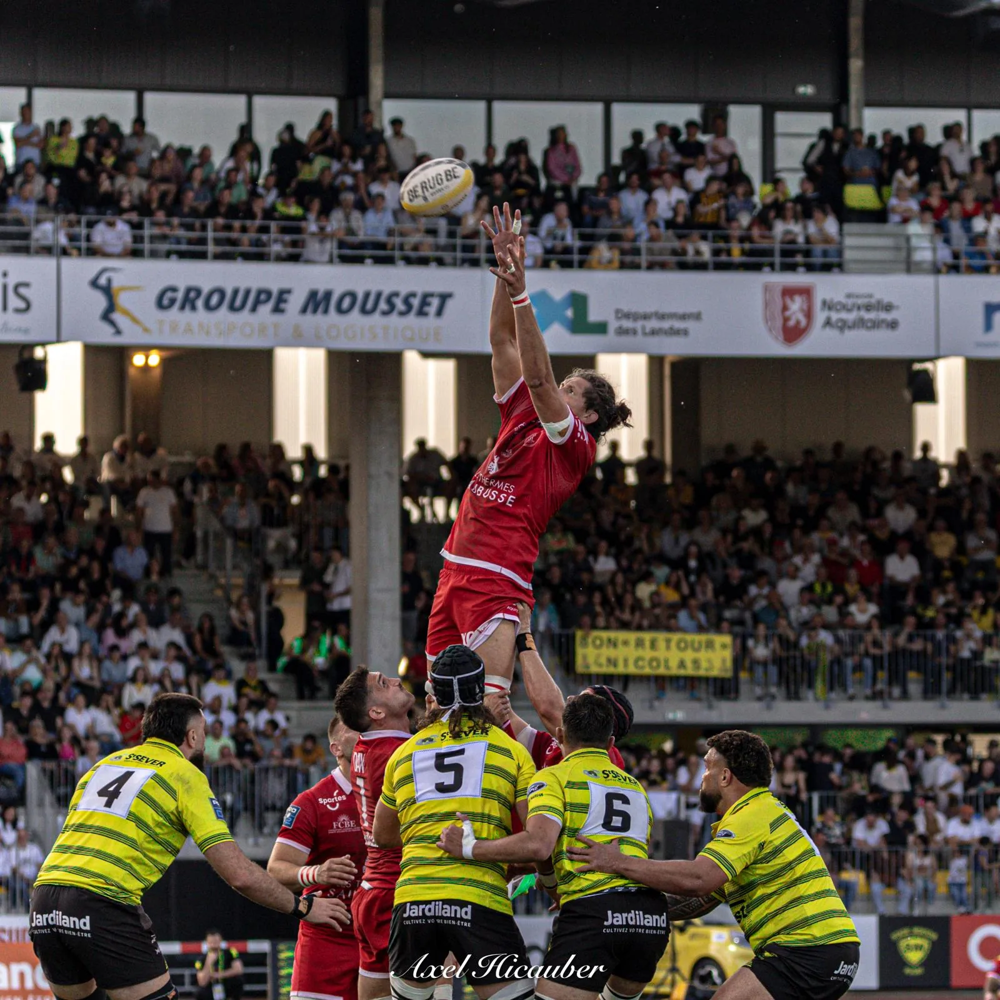

Photographe sportif · Landes
L’instant
avant l’impact.
Rugby · Cyclisme · Football · Automobile
Découvrir le portfolio ↘01 — L’approche
Le sport se joue en une fraction de seconde.
Je photographie ce que l’œil n’a pas le temps de retenir : la tension, le geste et l’émotion brute.
02 — Sélection complète
Portfolio
64 photographiesCliquez pour agrandir
Au-delà du résultat
Capturer l’effort.
Raconter l’émotion.
03 — Votre projet